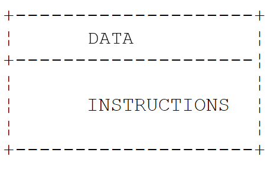

3. De basis van de taal C#
3.1. Inleiding
We beginnen met C# te behandelen als een traditionele programmeertaal. Klassen komen in het volgende hoofdstuk aan bod. In een programma zijn er twee hoofdbestanddelen:
- gegevens;
- de instructies die ze bewerken.
Gegevens en instructies houden we meestal gescheiden:

Alle voorbeelden in dit hoofdstuk zijn single-file-applicaties: één bestand [.cs], zonder projectbestand ([.csproj]), dat wordt uitgevoerd met de opdracht [dotnet run basics-01.cs]. Deze mogelijkheid, in .NET 10 geïntroduceerd, kwam in het vorige hoofdstuk aan bod. De voorbeelden staan in de map [03-basics] van de code van de cursus. Ze worden uitgevoerd met de Franse landinstelling (fr-FR), zoals op een Franse Windows-computer: reële getallen worden met een decimale komma weergegeven.
3.2. Het minimale programma
3.2.1. Top-level statements
Het programma [basics-01.cs] ziet er als volgt uit:
Resultaten:
Toelichting:
- het programma bevat geen klassen of methoden: de instructies staan rechtstreeks in het bestand. Dit heten top-level statements (C# 9, 2020). Het bestand van één programma kan ze bevatten;
- regel 3: de methode [WriteLine] van de klasse [Console] schrijft een regel naar het scherm;
- regel 5: de klasse [Console] hoort bij de namespace [System]. De volledige naam is [System.Console]. Een namespace groepeert verwante typen, net zoals een map bestanden groepeert;
- regel 5: het programma beschikt over een array [args] met de opdrachtregelargumenten. Daar komen we terug in de paragraaf „Argumenten van het hoofdprogramma”. Het aantal elementen van de array is [args.Length]. De operator + voegt hier een tekenreeks en een getal samen: het getal wordt eerst naar een tekenreeks omgezet.
Met twee opdrachtregelargumenten (alles wat volgt op [--] wordt aan het programma doorgegeven):
3.2.2. De klassieke vorm met een Main-methode
De cursus van 2008 (C# 3.0) behandelde top-level statements niet. Hetzelfde programma werd als volgt geschreven: [basics-02.cs]:
Resultaten:
Toelichting:
- regel 2: de richtlijn [using] importeert de namespace [System]. U kunt dan [Console] schrijven in plaats van [System.Console];
- regel 4: de klasse staat in de namespace [Basics]. Vanaf C# 10 kunt u [namespace Basics;] schrijven (namespace op bestandsniveau): het hele bestand hoort dan bij deze namespace, zonder accolades of extra inspringing. Deze vorm gebruiken we voortaan;
- regel 6: in C# hoort alle code bij een klasse. De klasse heet hier [Program];
- regel 9: de statische methode [Main] is het ingangspunt van het programma: dit is de methode die het systeem bij het starten uitvoert. De parameter [args], ontvangt de opdrachtregelargumenten.
De twee programma’s zijn gelijkwaardig. Zodra de compiler top-level statements aantreft, genereert hij een klasse en een methode met de naam [Main] die deze instructies bevatten, plus de parameter [string[] args]. Top-level statements zijn dus gewoon een verkorte schrijfwijze van de standaardsyntaxis. Ze zijn goed geschikt voor de kleine programma’s in dit hoofdstuk; de standaardsyntaxis blijft nuttig wanneer u de klasse wilt bekijken die [Main] bevat.
3.2.3. Impliciete using-richtlijnen
Het programma [basics-01.cs] gebruikt de klasse [Console] zonder de richtlijn [using System;]. Dat kan doordat de .NET SDK aan elk consoleprogramma automatisch een gegenereerd bestand toevoegt met [global using]-richtlijnen (C# 10), die gelden voor alle bestanden van het programma. Voor [basics-01.cs] bevat dit bestand:
Dit zijn de impliciete using-richtlijnen: de meestgebruikte namespaces worden automatisch geïmporteerd. Een namespace die niet in deze lijst staat, zoals [System.Globalization], moet altijd met een [using]-richtlijn bovenaan het bestand worden geïmporteerd. In het programma [basics-02.cs] is de richtlijn [using System;] dus overbodig: we hebben haar laten staan om het formaat van 2008 te tonen.
3.3. C#-gegevens
C# gebruikt de volgende gegevenstypen:
- gehele getallen;
- reële getallen;
- decimale getallen;
- tekens en tekenreeksen;
- Booleaanse waarden;
- objecten.
3.3.1. Voorgedefinieerde gegevenstypen
C#-type | .NET-type | Weergegeven gegevens | Literalsuffix | Codering | Waardenbereik |
[char] | [Char] (S) | teken | 2 bytes | Unicode-teken (UTF-16) | |
[string] | [String] (C) | tekenreeks | verwijzing naar een reeks Unicode-tekens | ||
[int] | [Int32] (S) | geheel getal | 4 bytes | [-2³¹, 2³¹-1] of [-2147483648, 2147483647] | |
[uint] | [UInt32] (S) | geheel getal zonder teken | U | 4 bytes | [0, 2³²-1] of [0, 4294967295] |
[long] | [Int64] (S) | geheel getal | L | 8 bytes | [-2⁶³, 2⁶³-1] of [-9223372036854775808, 9223372036854775807] |
[ulong] | [UInt64] (S) | geheel getal zonder teken | UL | 8 bytes | [0, 2⁶⁴-1] of [0, 18446744073709551615] |
[sbyte] | [SByte] (S) | geheel getal | 1 byte | [-2⁷, 2⁷-1] of [-128, 127] | |
[byte] | [Byte] (S) | geheel getal zonder teken | 1 byte | [0, 2⁸-1] of [0, 255] | |
[short] | [Int16] (S) | geheel getal | 2 bytes | [-2¹⁵, 2¹⁵-1] of [-32768, 32767] | |
[ushort] | [UInt16] (S) | geheel getal zonder teken | 2 bytes | [0, 2¹⁶-1] of [0, 65535] | |
[float] | [Single] (S) | reëel getal | F | 4 bytes | [1,5 10⁻⁴⁵, 3,4 10³⁸] in absolute waarde, 7 significante cijfers |
[double] | [Double] (S) | reëel getal | D | 8 bytes | [5,0 10⁻³²⁴, 1,7 10³⁰⁸] in absolute waarde, 15 tot 16 significante cijfers |
[decimal] | [Decimal] (S) | decimaal getal | M | 16 bytes | [1,0 10⁻²⁸, 7,9 10²⁸] in absolute waarde, 28 tot 29 significante cijfers |
[bool] | [Boolean] (S) | Booleaanse waarde | 1 byte | [true], [false] | |
[object] | [Object] (C) | objectverwijzing | verwijzing naar een object van elk type |
Hierboven hebben we bij elk C#-type het gelijkwaardige .NET-type vermeld, gemarkeerd met (S) als het type een structuur is en met (C) als het een klasse is. We zien dat er twee mogelijke namen zijn voor een geheel getal van 32 bits: [int] en [Int32]. Het type [int] is een C#-sleutelwoord. [Int32] is een structuur in de namespace [System]: de volledige naam is [System.Int32]. Het type [int] is een C#-alias die verwijst naar de .NET-structuur [System.Int32]. Zo is ook het C#-type [string] een alias voor het .NET-type [System.String]. [System.String] is een klasse, geen structuur. De twee begrippen lijken op elkaar, maar verschillen fundamenteel op het volgende punt:
- een variabele van een structuurtype bevat rechtstreeks haar waarde: dit heet een waardetype;
- een variabele van een klassetype bevat het adres van het object (haar verwijzing); dit heet een referentietype.
Daarnaast zijn er twee minder gebruikelijke typen:
- [nint] en [nuint] (C# 9) zijn gehele getallen met en zonder teken waarvan de grootte die van een geheugenadres is: 4 bytes op een 32-bitssysteem, 8 bytes op een 64-bitssysteem. Ze worden vooral gebruikt voor de interactie met native code;
- [System.Half] (.NET 5) is een zwevendekommagetal van 2 bytes met lage precisie, gebruikt in grafische berekeningen en machine learning. Het is geen voorgedefinieerd type van de taal: er is geen C#-sleutelwoord voor.
Een structuur is, net als een klasse, een complex type met eigenschappen en methoden. Zo kunnen we schrijven:
De literal 3 is standaard van het C#-type [int] en dus van het .NET-type [System.Int32]. Deze structuur heeft een methode [GetType()] die een object retourneert dat het gegevenstype beschrijft. Een van de eigenschappen van dit object, [FullName] , is de volledige naam van het type. De literal 3 is dus een complexer object dan het op het eerste gezicht lijkt. Het vraagteken in [string?] wordt iets verderop uitgelegd.
Het programma [basics-03.cs] illustreert deze verschillende punten:
Resultaten:
Toelichting:
- regel 2: declaratie van een geheel getal [integer] dat met 2 is geïnitialiseerd;
- regel 16: de instructie [Console.WriteLine("... {0} ... {1} ...", param0, param1, ...)] toont de tekst die als eerste parameter is opgegeven (het formaat) op het scherm, waarbij elke {i} wordt vervangen door de waarde van de i-de parameter na het formaat. De parameters worden vanaf 0 genummerd;
- regel 17: het type van een variabele [v] verkrijgt u via [v.GetType().FullName]. De grootte in bytes van een voorgedefinieerd waardetype [T] verkrijgt u via [sizeof(T)];
- regel 20: omdat het type [string] naar een klasse verwijst en niet naar een structuur, kan de operator [sizeof] niet worden gebruikt;
- regel 33: [sizeof(nint)] is in gewone code niet toegestaan omdat de grootte van [nint] pas tijdens de uitvoering bekend is. De eigenschap [nint.Size] geeft aan dat die op de gebruikte 64-bitsmachine 8 bytes bedraagt;
- regel 35: u kunt niet schrijven [Half h = 1.5;]: er bestaat geen impliciete conversie van een [double] naar een [Half]. De notatie [(Half)] is een expliciete conversie (in het Engels „cast” genoemd), die we later bekijken;
- regel 40–42: de eigenschappen [MinValue] en [MaxValue] van de numerieke typen geven de grenzen van hun waardenbereik aan.
De uitvoer toont de .NET-typenamen in plaats van de C#-aliassen. Let op de decimale komma bij reële getallen: de getallen worden omgezet naar tekenreeksen volgens de landinstelling van het systeem, hier de Franse.
3.3.2. Notatie voor literale gegevens
Gegevens | Voorbeelden van literals |
[int] geheel getal (32 bits) | 145, -7, 0xFF (hexadecimaal), 0b1010_1010 (binair) |
geheel getal [long] (64 bits), suffix L | 100000L, 1_000_000_000_000L |
geheel getal zonder teken, suffix U of UL | 4000000000U, 10UL |
zwevendekommagetal [double] | 134.789, -45E-18 (-45 × 10⁻¹⁸) |
reëel getal [float], suffix F | 134.789F, -45E-18F |
reëel getal [decimal], suffix M | 100000.50M |
teken [char] | 'A', 'b', '\n', '\u00e9' |
tekenreeks [string] | "today", "c:\\chap1", @"c:\chap1", $"{name} is {age} years old", """plain text""" |
Booleaanse waarde [bool] | [true], [false] |
datum | [new DateTime(1954, 10, 13)] (jaar, maand, dag) voor 13-10-1954 |
In de broncode worden reële getallen altijd met een decimale punt geschreven, ongeacht de landinstelling van het systeem. Sinds C# 7 kunnen gehele getallen binair worden geschreven (met het voorvoegsel [0b]) en kunnen groepen cijfers worden gescheiden met het teken _ om de leesbaarheid te vergroten: [1_000_000] is het gehele getal een miljoen.
Een gewone stringliteral kan escapesequenties bevatten die met het teken \ beginnen: "\n" staat voor het regeleindeteken en niet voor de reeks van de twee tekens \ en n, "\t" staat voor een tab, "\"" voor een dubbel aanhalingsteken en "\\" voor het teken \ zelf. Om het Windows-pad c:\chap1\paragraph3 te schrijven, moet u dus "c:\\chap1\\paragraph3" schrijven. U kunt ook @"c:\chap1\paragraph3" schrijven: de syntaxis @"text" geeft aan dat de tekst precies zo wordt overgenomen als hij is geschreven, zonder het teken \ te interpreteren. Dit heet een verbatim string.
C# kent nu nog twee andere soorten tekenreeksen:
- de geïnterpoleerde string (C# 6) $"...": uitdrukkingen tussen accolades worden geëvalueerd en hun waarden worden in de tekenreeks ingevoegd. Een uitdrukking kan worden gevolgd door een formaataanduiding na de dubbele punt: [$"{d1:F2}"] toont het reële getal [d1] met twee decimalen. Dit is de leesbaarste manier om een tekenreeks samen te stellen en we gebruiken haar voortaan in plaats van de formaten {0}, {1}, ...;
- de raw string (C# 11) """...""": begint en eindigt met minstens drie aanhalingstekens. Hij mag aanhalingstekens en tekens \ zonder escape bevatten en mag zich over meerdere regels uitstrekken. De spaties vóór de afsluitende aanhalingstekens worden van elke regel verwijderd, zodat de tekst met de code kan inspringen. Dit is erg handig om JSON, SQL of HTML te schrijven.
Het programma [basics-04.cs] toont deze verschillende notaties:
Resultaten:
Toelichting:
- regel 3: [0xFF] is 255 en [0b1010_1010] is 170;
- regel 7: -45E-18 wordt weergegeven als -4,5E-17: dit is dezelfde waarde, genormaliseerd;
- regel 12: de reeks \u00e9 staat voor het Unicode-teken met hexadecimale code 00E9, dus é;
- regel 16: een datum. De methode [ToShortDateString] toont die in het korte formaat van de Franse cultuur. Voor een datum zonder tijd heeft .NET 6 het type [DateOnly] toegevoegd; daar komen we in hoofdstuk 5 op terug;
- regel 20–22: de twee tekenreeksen zijn identiek, zoals de uitvoer laat zien;
- regel 30: een geïnterpoleerde string. De uitdrukkingen [name], [age], en [age + 10] worden geëvalueerd en daarna in de tekenreeks ingevoegd;
- regel 32: enkele formaten: F1 (één decimaal), X (hexadecimaal), B8 (binair met 8 cijfers, .NET 8), N0 (duizendtalscheidingsteken, geen decimalen);
- regel 33: een aangepast datumformaat: dag van de week, dag, maand voluit, jaar;
- regel 36–41: een raw string over meerdere regels. Aanhalingstekens en het teken \ worden zoals ze zijn geschreven. De vier spaties vóór de afsluitende aanhalingstekens zijn van elke regel verwijderd;
- regel 44: een geïnterpoleerde raw string. Met twee tekens $ worden uitdrukkingen tussen dubbele accolades {{ en }} geschreven: de enkele accolades, die vaak in JSON voorkomen, blijven gewone tekst.
3.3.3. Gegevens declareren
3.3.3.1. Functie van declaraties
Een programma bewerkt gegevens die worden gekenmerkt door een naam en een type. Deze gegevens worden in het geheugen opgeslagen. Bij het compileren wijst de compiler aan elk gegeven een geheugenplaats toe die wordt gekenmerkt door een adres en een grootte. Hij doet dit op basis van de declaraties van de programmeur. Bovendien stellen deze declaraties de compiler in staat programmeerfouten op te sporen. Zo wordt de bewerking [x = x * 2;] ongeldig verklaard als [x] een tekenreeks is.
3.3.3.2. Constanten declareren
De syntaxis voor het declareren van een constante is als volgt:
Bijvoorbeeld:
Waarom constanten declareren?
- Het programma is beter leesbaar als de constante een betekenisvolle naam krijgt;
- het programma is gemakkelijker te wijzigen als de „constante” moet veranderen. Als het btw-tarief bijvoorbeeld 0,25 wordt, hoeft alleen de instructie te worden aangepast die de waarde vastlegt: [const double VatRate = 0.25;]. Als 0,2 expliciet in het programma was gebruikt, zouden veel instructies moeten worden gewijzigd.
De waarde van een constante moet bekend zijn tijdens het compileren: een getal, een tekenreeks, een Booleaanse waarde of een uitdrukking die uit andere constanten kan worden berekend. Volgens afspraak beginnen constantenamen in .NET met een hoofdletter.
3.3.3.3. Variabelen declareren
Een variabele wordt geïdentificeerd door een naam en is gekoppeld aan een gegevenstype. C# maakt onderscheid tussen hoofdletters en kleine letters: de variabelen [END] en [end] zijn verschillend.
Variabelen kunnen bij hun declaratie worden geïnitialiseerd. De syntaxis voor het declareren van een of meer variabelen is:
waarbij [type] een voorgedefinieerd type is of een type dat de programmeur heeft gedefinieerd. Initialisatie is optioneel; C# staat echter niet toe dat een lokale variabele wordt gebruikt voordat er een waarde aan is toegekend.
U kunt het type van een variabele ook weglaten door in plaats van het type het sleutelwoord [var] te gebruiken:
Het sleutelwoord [var] betekent niet dat de variabele geen specifiek type heeft: ze heeft het type van de waarde die eraan wordt toegekend, zoals de compiler dat bepaalt. Initialisatie is hier verplicht, zodat de compiler het type kan afleiden. We gebruiken [var] wanneer het type uit de waarde duidelijk blijkt.
Het programma [basics-05.cs] ziet er als volgt uit:
Resultaten:
Toelichting:
- regel 2–3: twee constanten;
- regel 8: een gegeven met een expliciet type;
- regel 9: [GetType().Name] is de korte naam van het type, [GetType().FullName] is de volledige naam;
- regel 11: een impliciet getypeerde waarde. Omdat 3 van het type [int] is, is [j] van het type [int];
- regel 13: omdat [DateTime.Now] (de huidige datum en tijd) van het type [DateTime] is, is [today] van het type [DateTime];
- regel 15–18: het afgeleide type hangt af van de schrijfwijze van de literal: 3.5 is een [double], 3.5F is een [float] en 10L is een [long];
- regel 21: drie variabelen die op dezelfde regel zijn gedeclareerd; alleen [a] en [c] worden geïnitialiseerd. [b] krijgt op de volgende regel een waarde.
Een variabele die impliciet is getypeerd met het sleutelwoord [var] kan daarna niet meer van type veranderen. Zo kunt u na regel 13 niet schrijven:
omdat [today] van het type [DateTime] is. In hoofdstuk 5 zien we, bij LINQ, dat het mogelijk is om binnen een uitdrukking een type „ter plekke” te maken: dit is een anoniem type, waaraan de programmeur geen naam heeft gegeven. Als gegevens van een anoniem type aan een variabele moeten worden toegewezen, kan die variabele alleen worden gedeclareerd met het sleutelwoord [var].
3.3.4. Nullable typen
Een variabele van een waardetype, zoals [int], bevat altijd een waarde. Soms is het nuttig om de afwezigheid van een waarde uit te drukken: een onbekende leeftijd, een leeg veld in een database. Het type [int?] (C# 2) is het type [int] waaraan de waarde [null] is toegevoegd, wat „geen waarde” betekent. Dit heet een nullable waardetype. Het principe geldt voor alle waardetypen: [double?], [bool?], [DateTime?], ...
Een variabele van een referentietype, zoals [string], kan altijd de waarde [null] hebben: dit betekent dat ze naar geen enkel object verwijst. Als u een lid van zo’n variabele probeert te gebruiken, bijvoorbeeld de eigenschap [Length], krijgt u een fout tijdens de uitvoering ([NullReferenceException]), een van de meest voorkomende fouten in C#. Vanaf C# 8 kan de compiler dit helpen voorkomen: met nullable referentietypen, die standaard zijn ingeschakeld in projecten die met de opdracht [dotnet new] zijn gemaakt en in single-file-applicaties, geldt:
- het type [string] staat voor een tekenreeks die nooit [null] is;
- het type [string?] staat voor een tekenreeks die [null] kan zijn.
De compiler houdt de mogelijke waarden van variabelen bij en geeft een waarschuwing wanneer de waarde [null] mogelijk wordt gebruikt: [null] toewijzen aan een variabele van het type [string], [Length] gebruiken op een variabele van het type [string?] die niet is getest, enzovoort. Anders dan [int?] maakt [string?] tijdens de uitvoering geen nieuw type aan: het is een aanwijzing voor de compiler.
Deze typen komen we al in de eerste voorbeelden tegen, want de methode [Console.ReadLine()], die een via het toetsenbord getypte regel leest, retourneert een [string?]: ze retourneert [null] wanneer er niets meer te lezen is (einde van de invoerstroom). Het programma [basics-06.cs] ziet er als volgt uit:
Resultaten bij het invoeren van tekst via het toetsenbord:
Resultaten wanneer de gebruiker op Ctrl-D drukt (Ctrl-Z gevolgd door Enter onder Windows), waardoor de invoerstroom wordt gesloten:
Toelichting:
- regel 3: [age] bevat geen waarde;
- regel 4: de eigenschap [HasValue] geeft aan of de variabele een waarde bevat; de eigenschap [Value] levert die waarde;
- regel 8: een [int?] kan niet rechtstreeks aan een [int] worden toegewezen, omdat ze gelijk kan zijn aan [null]. Een expliciete conversie is vereist, die een uitzondering genereert als [age] gelijk is aan [null]. De veiligere operator [??] bespreken we later;
- regel 12: een tekenreeks die gelijk kan zijn aan [null];
- regel 15: een tekenreeks die nooit gelijk is aan [null]. Als u [name = null;] schreef, zou dat een compilerwaarschuwing opleveren;
- regel 20: [Console.ReadLine()] levert een [string?] op. Als u [line] declareert als type [string] , krijgt u een waarschuwing;
- regel 21: de waarde [null] wordt gecontroleerd;
- regel 29: in de [else]-tak weet de compiler dat [line] niet gelijk is aan [null]: hij geeft geen waarschuwing voor het gebruik van [line.Length].
3.3.5. Conversies tussen getallen en tekenreeksen
Conversie | Methode |
getal -> tekenreeks | [number.ToString()] of een geïnterpoleerde string [$"{number}"] |
tekenreeks -> int | [int.Parse(str)] of [int.TryParse(str, out int number)] |
tekenreeks -> long | [long.Parse(str)] of [long.TryParse(str, out long number)] |
tekenreeks -> double | [double.Parse(str)] of [double.TryParse(str, out double number)] |
tekenreeks -> float | [float.Parse(str)] of [float.TryParse(str, out float number)] |
tekenreeks -> decimal | [decimal.Parse(str)] of [decimal.TryParse(str, out decimal number)] |
Het omzetten van een tekenreeks naar een getal kan mislukken als de tekenreeks geen geldig getal voorstelt. De methode [Parse] genereert dan een fatale fout die een uitzondering heet. Deze fout kunt u afhandelen met de volgende [try / catch]-constructie:
Als de functie geen uitzondering genereert, gaat de uitvoering verder met de volgende instructie; anders gaat ze naar de body van de [catch]-clausule en vervolgens naar de volgende instructie. Op het afhandelen van uitzonderingen komen we terug in de paragraaf die eraan is gewijd.
De methode [TryParse] (.NET 2.0) voorkomt de uitzondering: ze retourneert de Booleaanse waarde [true] als de conversie slaagt en [false] anders, en slaat het resulterende getal op in een variabele die wordt doorgegeven met het sleutelwoord [out]. Vanaf C# 7 kan deze variabele in de aanroep zelf worden gedeclareerd: [int.TryParse(str, out var number)]. De doorgiftemodus [out] wordt uitgelegd in de paragraaf over parameteroverdracht. Wanneer onjuiste invoer te verwachten is, bijvoorbeeld via het toetsenbord, verdient [TryParse] de voorkeur boven [Parse]: een invoerfout is geen uitzonderlijke situatie.
Het programma [basics-07.cs] toont verschillende technieken voor het omzetten tussen getallen en tekenreeksen. De functie [Display] toont de waarde van haar parameter op het scherm:
1 2 3 4 5 6 7 8 9 10 11 12 13 14 15 16 17 18 19 20 21 22 23 24 25 26 27 28 29 30 31 32 33 34 35 36 37 38 39 40 41 42 43 44 45 46 47 48 49 50 51 52 53 54 55 56 57 58 59 60 61 62 63 64 65 66 67 68 69 70 71 72 73 74 75 76 77 78 79 80 81 82 83 84 85 86 87 88 89 90 91 92 93 94 95 96 97 98 99 100 101 102 103 104 105 106 | |
Resultaten:
Toelichting:
- regel 2: de namespace [System.Globalization], die de klasse [CultureInfo] bevat, valt niet onder de impliciete using-richtlijnen;
- regel 5–8: de te converteren gegevens;
- regel 11–14: elk object heeft een methode [ToString()] die het naar een tekenreeks omzet;
- regel 25–30: de uitzondering die [int.Parse] kan genereren, wordt afgehandeld. [e.Message] is het foutbericht dat bij de uitzondering [e] hoort. De uitzonderingsberichten van .NET zijn in het Engels: .NET 10 biedt hiervoor geen Franse vertaling;
- regel 47: de tekenreeks gebruikt een decimale komma, overeenkomstig de Franse landinstelling van het systeem;
- regel 73: [TryParse] slaagt en slaat 123 op in de variabele [i2], die in de aanroep is gedeclareerd;
- regel 77: [TryParse] mislukt en retourneert [false]; de variabele [i3] krijgt dan de waarde 0;
- regel 83: de huidige landinstelling van het programma is fr-FR;
- regel 86: in de Franse landinstelling is de punt geen decimaal scheidingsteken: de conversie mislukt;
- regel 94: de invariante landinstelling [CultureInfo.InvariantCulture] gebruikt de decimale punt, ongeacht de machine. Ze wordt gebruikt om getallen te lezen en te schrijven in bestanden of bij uitwisselingen tussen programma’s, die niet van de taal van de gebruiker mogen afhangen;
- regel 95–96: hetzelfde getal omgezet naar een tekenreeks volgens de huidige landinstelling (100,87) en volgens de invariante landinstelling (100.87);
- regel 97: [TryParse] accepteert ook een landinstelling;
- regel 103–105: een lokale functie. In een programma met top-level statements kunt u geen methoden schrijven, omdat er geen klassen zijn; u schrijft in plaats daarvan lokale functies, die kunnen worden aangeroepen vóór ze zijn gedefinieerd. Ze komen aan bod in de paragraaf „Lokale functies en tuples”.
In de cursus van 2008 stond dat reële getallen in tekenreeksvorm een komma moeten gebruiken: dat geldt alleen voor de Franse cultuur. Een programma dat getallen leest, moet altijd weten in welke cultuur ze zijn geschreven.
3.3.6. Arrays met gegevens
Een C#-array is een object waarmee gegevens van hetzelfde type onder één identificatie worden gegroepeerd. Het wordt als volgt gedeclareerd:
[n] is het aantal gegevenselementen dat de array kan bevatten. De syntaxis [array[i]] verwijst naar gegevenselement nummer i, waarbij i tot het bereik [0, n-1] behoort. Elke verwijzing naar gegevenselement [array[i]] waarbij i niet in het bereik [0, n-1] ligt, veroorzaakt een uitzondering. Bij het aanmaken krijgt elk element van de array de standaardwaarde van zijn type: 0 voor getallen, [false] voor Booleaanse waarden en [null] voor referentietypen. Een array kan tegelijk met de declaratie worden geïnitialiseerd:
of, eenvoudiger:
of, vanaf C# 12, met een collectie-expressie:
Deze laatste vorm gebruiken we voortaan. Arrays hebben een eigenschap [Length], die het aantal elementen aangeeft dat ze bevatten.
Een tweedimensionale array wordt als volgt gedeclareerd:
waarbij [n] het aantal rijen is en [m] het aantal kolommen. De syntaxis [array[i, j]] verwijst naar element j in rij i. De tweedimensionale array kan ook tegelijk met de declaratie worden geïnitialiseerd:
Het aantal elementen in elke dimensie verkrijgt u met de methode [GetLength(i)], waarbij i=0 de dimensie van de eerste index voorstelt, i=1 die van de tweede index, enzovoort. Het aantal dimensies verkrijgt u met de eigenschap [Rank] en het totale aantal elementen met de eigenschap [Length].
Een array van arrays (ook wel gekartelde (jagged) array genoemd) wordt als volgt gedeclareerd:
De bovenstaande declaratie maakt een array van n elementen. Elk element, [array[i]], is een verwijzing naar een eendimensionale array. Deze verwijzingen worden door de bovenstaande declaratie niet geïnitialiseerd; ze hebben de waarde [null]. Anders dan bij een tweedimensionale array kan elke rij een andere lengte hebben.
C# 8 introduceerde twee handige notaties:
- indexeren vanaf het einde: [array[^1]] is het laatste element, [array[^2]] is het voorlaatste, enzovoort. [array[^1]] is gelijkwaardig aan [array[array.Length - 1]];
- het bereik: [array[1..3]] is een nieuwe array met de elementen met index 1 en 2. De beginindex is inbegrepen en de eindindex niet. De grenzen kunnen worden weggelaten: [array[2..]] loopt van index 2 tot het einde en [array[..^1]] loopt van het begin tot en met het voorlaatste element.
Het programma [basics-08.cs] combineert deze verschillende arrays:
Resultaten:
Toelichting:
- regel 3: een eendimensionale array wordt geïnitialiseerd;
- regel 4: een [for] -lus doorloopt de indexen van 0 tot [integers.Length - 1]. De [for] -lus wordt hieronder toegelicht;
- regel 10: een tweedimensionale array (2 rijen, 2 kolommen);
- regel 11–13: [GetLength(0)] is het aantal rijen, [GetLength(1)] is het aantal kolommen;
- regel 21: een array [names] met 3 elementen. Elk element is een verwijzing naar een array van het type [string[]], op dit moment [null];
- regel 24: de 3 elementen van de array [names] worden geïnitialiseerd. [names[i]] verwijst nu naar een array van i+1 tekenreeksen;
- regel 31: [names[i][j]] is het j-de element van de array waarnaar [names[i]] verwijst. Omdat [names[i]] een array is, is [names[i].Length] het aantal elementen ervan. De uitdrukking „name” + i + j wordt van links naar rechts geëvalueerd: „name” + i levert een tekenreeks op, waaraan j wordt toegevoegd;
- regel 44–45: arrays die zonder beginwaarden zijn gemaakt. Het type [string?[]] is een array waarvan de elementen [null] kunnen zijn;
- regel 49: een collectie-expressie;
- regel 51: de methode [string.Join] bouwt een tekenreeks op uit de elementen van de array, gescheiden door de tekenreeks die als eerste parameter is doorgegeven;
- regel 53: het laatste en het voorlaatste element;
- regel 55: de elementen met index 1 en 2;
- regel 60–61: een bereik maakt een kopie: een wijziging van [slice] wijzigt [values] niet.
3.4. Elementaire C#-instructies
Er zijn:
- elementaire instructies die de computer uitvoert;
- instructies die de programmastroom besturen.
Elementaire instructies worden duidelijk als we de structuur van een microcomputer en zijn randapparatuur bekijken:

- 1: informatie van het toetsenbord lezen;
- 2: informatie verwerken;
- 3: informatie naar het scherm schrijven.
3.4.1. Naar het scherm schrijven
Er zijn verschillende instructies om naar het scherm te schrijven:
waarbij [expression] elk gegeven is dat naar een tekenreeks kan worden omgezet om op het scherm te worden weergegeven. Alle C#- of .NET-objecten hebben een methode [ToString()] waarmee deze omzetting wordt uitgevoerd. De methode [Write] doet hetzelfde als [WriteLine] maar gaat niet naar de volgende regel.
De klasse [System.Console] biedt toegang tot de schermschrijfbewerkingen ([Write], [WriteLine]). Ze heeft twee eigenschappen, [Out] en [Error], die schrijfstromen zijn van het type [TextWriter]:
- [Console.WriteLine()] is gelijkwaardig aan [Console.Out.WriteLine()] en schrijft naar de stroom [Out], die doorgaans aan het scherm is gekoppeld;
- [Console.Error.WriteLine()] schrijft naar de stroom [Error], die doorgaans ook aan het scherm is gekoppeld.
De stromen [Out] en [Error] kunnen tijdens de uitvoering naar bestanden worden omgeleid, zoals we zo zullen zien.
3.4.2. Via het toetsenbord ingevoerde gegevens lezen
De gegevensstroom van het toetsenbord wordt voorgesteld door het object [Console.In] van het type [TextReader]. Met dit objecttype kunt u een regel tekst lezen met de methode [ReadLine]:
De klasse [Console] biedt een methode [ReadLine], die standaard aan de stroom [In] is gekoppeld. U kunt dus schrijven:
De via het toetsenbord getypte regel, zonder het regeleindeteken, wordt opgeslagen in de variabele [line] en kan daarna door het programma worden verwerkt. Zoals we hebben gezien, retourneert [ReadLine] de waarde [null] wanneer de invoerstroom is uitgeput: daarom is de variabele van het type [string?]. De stroom [In] kan net als de stromen [Out] en [Error] naar een bestand worden omgeleid.
3.4.3. Voorbeeld van invoer en uitvoer
Het programma [basics-09.cs] illustreert de invoer- en uitvoerbewerkingen via toetsenbord en scherm:
Resultaten:
Toelichting:
- regel 4: [obj] is een objectverwijzing;
- regel 5: [obj] wordt op het scherm weergegeven. De methode [obj.ToString()] wordt aangeroepen om de weer te geven tekst op te halen;
- regel 9: de tekst wordt naar de stroom [Error] geschreven;
- regel 10: hetzelfde, maar met een formaat. De eerste parameter, "i={0}", is het weergaveformaat; de andere parameters zijn de weer te geven uitdrukkingen. De elementen {n} zijn positionele parameters: tijdens de uitvoering wordt {n} vervangen door de waarde van de n-de uitdrukking;
- regel 13–14: een prompt wordt zonder regeleinde weergegeven en daarna wordt de via het toetsenbord getypte regel gelezen;
- regel 15: in een geïnterpoleerde string levert een waarde als [null] een lege tekenreeks op: er wordt geen waarschuwing gegeven.
In de resultaten:
- regel 2: de uitvoer die door regel 5 van de code is gegenereerd. De methode
*[obj.ToString()]heeft de typenaam van de variabele*[obj]*weergegeven:*[System.Object]*. Het type [object] is een C#-alias voor het .NET-type [System.Object]*; - regel 3–4: de twee uitvoerregels voor de [Error]-stroom verschijnen op het scherm net als die voor de [Out]-stroom.
3.4.4. Invoer en uitvoer omleiden
Windows, Linux en macOS kennen drie standaardapparaten:
- het standaardinvoerapparaat, dat standaard naar het toetsenbord verwijst en nummer 0 heeft;
- het standaarduitvoerapparaat, dat standaard naar het scherm verwijst en nummer 1 heeft;
- het standaardfoutapparaat, dat standaard op het scherm is ingesteld en nummer 2 heeft.
In C# schrijft de schrijfstroom [Console.Out] naar apparaat 1, schrijft de schrijfstroom [Console.Error] naar apparaat 2 en leest de leesstroom [Console.In] gegevens van apparaat 0.
Wanneer u een programma in een opdrachtvenster uitvoert, kunt u aangeven welke apparaten 0, 1 en 2 zijn voor het programma dat wordt uitgevoerd. Na de programmaargumenten kunt u de standaardinvoer- en -uitvoerapparaten naar bestanden omleiden:
Omleiding | Betekenis |
0<in.txt of <in.txt | Standaardinvoerstroom nr. 0 wordt omgeleid naar het bestand in.txt. In het programma leest de stroom [Console.In] zijn gegevens dus uit het bestand in.txt |
1>out.txt of >out.txt | leidt uitvoer nr. 1 om naar het bestand out.txt. In het programma schrijft de stroom [Console.Out] zijn gegevens dus naar het bestand out.txt |
1>>out.txt of >>out.txt | Zelfde als hierboven, maar de geschreven gegevens worden toegevoegd aan de huidige inhoud van het bestand out.txt |
2>err.txt | leidt uitvoer nr. 2 om naar het bestand err.txt. In het programma schrijft de stroom [Console.Error] zijn gegevens dus naar het bestand err.txt |
2>>err.txt | Zelfde als hierboven, maar de geschreven gegevens worden toegevoegd aan de huidige inhoud van het bestand err.txt |
1>out.txt 2>err.txt | De apparaten 1 en 2 worden beide omgeleid naar bestanden |
Houd er rekening mee dat het programma niet hoeft te worden aangepast om de invoer-/uitvoerstromen van een programma naar bestanden om te leiden: het besturingssysteem bepaalt de aard van de apparaten 0, 1 en 2. Bekijk het volgende programma, [basics-10.cs]:
In de cursus van 2008 werd met Visual Studio een uitvoerbaar bestand gegenereerd, dat vervolgens in een DOS-venster werd uitgevoerd. Tegenwoordig volstaat het commando [dotnet run] : de omleidingen worden toegepast op het gestarte programma. Hier is een sessie in een Linux-terminal (bash):
Opmerkingen:
- regel 1: de tekenreeks "test" wordt in het bestand in.txt geplaatst;
- regel 2: de inhoud van het bestand in.txt wordt ter controle weergegeven;
- regel 4: het programma wordt uitgevoerd. De stroom [In] wordt omgeleid naar het bestand in.txt, de stroom [Out] naar het bestand out.txt en de stroom [Error] naar het bestand err.txt. De uitvoering levert geen enkele uitvoer op;
- regels 5-6: de inhoud van het bestand out.txt laat zien dat het bestand in.txt is gelezen en dat het schrijven naar de stroom [Out] is omgeleid naar out.txt;
- regels 7-8: soortgelijke controle voor het bestand err.txt;
- regels 9-10: alleen de stroom [Error] wordt omgeleid: op het scherm verschijnt alleen de schrijfbewerking naar de stroom [Out];
- regels 11-12: alleen de stroom [Out] wordt omgeleid: op het scherm verschijnt alleen de schrijfbewerking naar de stroom [Error].
Het is duidelijk dat de stromen [Out] en [Error] niet naar dezelfde apparaten schrijven, aangezien ze afzonderlijk kunnen worden omgeleid. De stroom [Error] is bedoeld voor foutmeldingen: zo kunt u de uitvoer van een programma naar een bestand omleiden en toch de foutmeldingen op het scherm blijven zien.
De operatoren >, >> en 2> worden op dezelfde manier geschreven in de Windows-opdrachtprompt ([cmd]), in PowerShell en in bash. De operator < wordt herkend door [cmd] en bash, maar niet door PowerShell, dat hem reserveert voor toekomstig gebruik: in PowerShell wordt een bestand via een pipe (|) naar de standaardinvoer van een programma gestuurd. De volgende commando's, die ter illustratie worden gegeven (ze zijn voor deze cursus niet uitgevoerd), doen onder Windows wat de bovenstaande bash-sessie doet:
3.4.5. De waarde van een expressie aan een variabele toekennen
Hier gaat het om de bewerking [variable = expression;]. De expressie kan rekenkundig, relationeel, booleaans, een tekenreeks enzovoort zijn.
3.4.5.1. Interpretatie van de toekenningsbewerking
De bewerking [variable = expression;] is zelf een expressie die als volgt wordt geëvalueerd:
- de rechterkant van de toekenning wordt geëvalueerd: het resultaat is een waarde V;
- de waarde V wordt aan de variabele toegekend;
- de waarde V is ook de waarde van de toekenning, nu beschouwd als een expressie.
De bewerking [V1 = V2 = expression] is dus geldig. Omdat de operator = van rechts naar links wordt geëvalueerd, krijgen we [V1 = (V2 = expression)]. De expressie [V2 = expression] wordt geëvalueerd en heeft de waarde V. Door de evaluatie ervan is V aan V2 toegekend. Vervolgens wordt de volgende operator = geëvalueerd als [V1 = V]. De waarde van deze expressie is nog steeds V; door de evaluatie ervan wordt V aan V1 toegekend. De bewerking [V1 = V2 = expression] is dus een expressie waarvan de evaluatie:
- de waarde van [expression] aan de variabelen V1 en V2 toekent;
- de waarde van [expression] teruggeeft.
Dit kan worden veralgemeend tot een expressie van de vorm [V1 = V2 = ... = Vn = expression].
3.4.5.2. Rekenkundige expressies
De operatoren die in rekenkundige expressies worden gebruikt, zijn de volgende:
Operator | Rol |
+ | optelling |
- | aftrekking |
* | vermenigvuldiging |
/ | deling: het resultaat is het exacte quotiënt als minstens een van de operanden een reëel getal is. Als beide operanden gehele getallen zijn, is het resultaat het gehele quotiënt. Zo is 5/2 gelijk aan 2 en 5.0/2 gelijk aan 2.5 |
% | rest van de deling (modulo), ongeacht de aard van de operanden. De rest heeft hetzelfde teken als het deeltal: -5 % 2 is gelijk aan -1 |
Er zijn diverse wiskundige functies. Hier volgen er enkele:
Functie | Rol |
[double Sqrt(double x)] | vierkantswortel |
[double Cos(double x)], [Sin], [Tan] | cosinus, sinus, tangens (hoek in radialen) |
[double Pow(double x, double y)] | x tot de macht y |
[double Exp(double x)] | exponentiële functie |
[double Log(double x)], [Log10], [Log2] | natuurlijke logaritme, tiendelige logaritme, logaritme met grondtal 2 |
[Abs(x)], [Max(x, y)], [Min(x, y)] | absolute waarde, maximum, minimum (voor alle numerieke typen) |
[Floor(x)], [Ceiling(x)], [Truncate(x)] | onderste gehele deel, bovenste gehele deel, afkappen |
[Round(x)], [Round(x, n)] | afronden op het dichtstbijzijnde gehele getal, op n decimalen |
[Math.PI], [Math.E] | de constanten π en e |
Al deze functies zijn gedefinieerd in een .NET-klasse met de naam Math. Bij gebruik moet u ze vooraf laten gaan door de naam van de klasse waarin ze zijn gedefinieerd. U schrijft dus:
In de cursus van 2008 stond hier de volledige definitie van de klasse [Math]: tegenwoordig is die te vinden in de online documentatie van .NET, learn.microsoft.com/dotnet/api/system.math.
Het programma [basics-11.cs] ziet er als volgt uit:
Resultaten:
Opmerkingen:
- regel 3: de deling van twee gehele getallen is een gehele deling;
- regel 5: de rest heeft hetzelfde teken als het deeltal; de operator % is ook van toepassing op reële getallen;
- regel 8: het delen van een reëel getal door nul veroorzaakt geen fout; het resultaat is oneindig (weergegeven als ∞) of de speciale waarde NaN („Not a Number”) voor 0/0. Het delen van een geheel getal door nul genereert echter een uitzondering van het type [DivideByZeroException];
- regels 11-12: het voorbeeld hierboven;
- regel 18: [Floor] rondt naar beneden af, [Ceiling] rondt naar boven af, [Truncate] rondt af naar nul;
- regel 20: standaard rondt [Math.Round] een waarde die precies tussen twee gehele getallen in ligt af naar het dichtstbijzijnde even getal (bankiersafronding): 2.5 wordt 2 en 3.5 wordt 4;
- regel 21: geef de afrondingsmodus op voor de op school geleerde afrondingsmethode (2.5 wordt 3);
- regel 25: voorrang van operatoren, zoals hieronder weergegeven;
- regel 29: een meervoudige toekenning.
3.4.5.3. Volgorde van bewerkingen bij het evalueren van rekenkundige expressies
De volgorde van bewerkingen bij het evalueren van een rekenkundige expressie is als volgt (van hoogste naar laagste prioriteit):
Operatoren binnen hetzelfde blok [ ] hebben dezelfde prioriteit. Bij gelijke prioriteit wordt van links naar rechts geëvalueerd: 10 - 4 - 3 wordt geëvalueerd als (10 - 4) - 3 = 3.
3.4.5.4. Relationele expressies
De operatoren zijn: <, <=, ==, !=, >, >=. Hun prioriteit is:
- >, >=, <, <=;
- ==, !=.
Het resultaat van een relationele expressie is de booleaanse waarde [false] als de expressie onwaar is en anders [true].
Twee tekens vergelijken
Laat C1 en C2 twee tekens zijn. Ze kunnen worden vergeleken met de operatoren <, <=, ==, !=, >, >=. In dat geval worden hun Unicode-codes, die getallen zijn, vergeleken. Volgens de Unicode-volgorde gelden de volgende relaties:
Twee tekenreeksen vergelijken
Ze worden teken voor teken vergeleken. De eerste ongelijkheid tussen twee tekens leidt tot een ongelijkheid in dezelfde richting voor de tekenreeksen. Neem de vergelijking van de tekenreeksen "Cart" en "Cat":
Uit deze laatste ongelijkheid kunnen we opmaken dat "Cart" < "Cat". Neem de vergelijking van de tekenreeksen "Cat" en "Catkin". Ze zijn gelijk totdat de tekenreeks "Cat" is uitgeput. In dat geval wordt de uitgeputte tekenreeks als de "kleinere" beschouwd. We hebben dus de relatie "Cat" < "Catkin".
Functies om twee tekenreeksen te vergelijken
U kunt de relationele operatoren == en != gebruiken om te testen of twee tekenreeksen gelijk zijn, of de methode [Equals] van de klasse [System.String]. Voor de relaties <, <=, > en >= zijn de operatoren niet van toepassing op tekenreeksen: u moet de methode [CompareTo] van de klasse [System.String] of de statische methode [string.Compare] gebruiken. Ze geven een geheel getal terug:
- nul als de twee tekenreeksen gelijk zijn;
- positief als tekenreeks 1 groter is dan tekenreeks 2;
- negatief als tekenreeks 1 kleiner is dan tekenreeks 2.
Er is een subtiliteit: [CompareTo] en [string.Compare] vergelijken niet simpelweg Unicode-codes. Ze volgen de sorteerregels van de huidige cultuur, zoals in een woordenboek: in het Frans komt „élan” vóór „face”, ook al is de code van 'é' (233) groter dan die van 'f' (102). Om de vergelijkingsmodus te kiezen, accepteren [string.Compare] en [Equals] een parameter van het type [StringComparison]:
- [StringComparison.Ordinal]: teken-voor-tekenvergelijking van Unicode-codes. Dit is de snelste vergelijking en moet worden gebruikt voor identifiers, trefwoorden en bestandsnamen;
- [StringComparison.OrdinalIgnoreCase]: hetzelfde als hierboven, maar zonder onderscheid tussen hoofdletters en kleine letters;
- [StringComparison.CurrentCulture] (de standaardwaarde voor [CompareTo]): volgt de gangbare culturele conventies voor het sorteren van tekst die voor gebruikers bestemd is.
De operator == en de methode [Equals] zonder parameters voeren een ordinale vergelijking uit.
Het programma [basics-12.cs] ziet er als volgt uit:
Resultaten:
Opmerkingen:
- regel 3: een relationele expressie;
- regel 7: tekenvergelijking;
- regel 8: de conversie [(int)] van een teken geeft de Unicode-code ervan terug;
- regel 12: aan de variabele [n] wordt een negatief geheel getal toegekend omdat "cat" < "dog";
- regel 13: de variabele [equal] heeft de waarde [true] als de twee tekenreeksen gelijk zijn en anders [false];
- Regel 15: de operatoren == en != worden gebruikt om te controleren of twee tekenreeksen gelijk zijn. In een tekenreeksinterpolatie staat \" voor een aanhalingsteken;
- regel 16: de tekenreeks die als eerste is uitgeput, is de kortste;
- Regels 19-20: vergelijkingen op basis van Franse conventies: „élan” komt vóór „face” en „Cat” komt na „cat” (bij een gelijk aantal letters komen kleine letters vóór hoofdletters);
- regels 22-23: ordinale vergelijkingen: het resultaat is hier het verschil tussen de codes van de eerste verschillende tekens: 233 – 102 = 131 en 67 – 99 = –32;
- regels 25-27: als hoofdletters worden genegeerd, zijn „Cat” en „cat” gelijk.
3.4.5.5. Booleaanse expressies
De operatoren die kunnen worden gebruikt, zijn EN (&&), OF (||) en NIET (!). Het resultaat van een booleaanse expressie is een booleaanse waarde. Prioriteit van operatoren:
- ! ;
- && ;
- ||.
Relationele operatoren hebben een hogere prioriteit dan de operatoren && en ||. Deze twee operatoren evalueren hun rechteroperand alleen als dat nodig is: bij [a && b] wordt b niet geëvalueerd als a onwaar is; bij [a || b] wordt b niet geëvalueerd als a waar is. Dit heet „kortsluitevaluatie”. Het is dus veilig om [text != null && text.Length > 0] te schrijven.
3.4.5.6. Bitbewerkingen
Laat [i] en [j] twee gehele getallen zijn:
Bewerking | Rol |
i << n | Verschuift i n bits naar links. De binnenkomende bits zijn nullen |
i >> n | Verschuift i n bits naar rechts. Als i een geheel getal met teken is ([sbyte], [short], [int], [long]), blijft het tekenbit behouden |
i >>> n | verschuiving naar rechts zonder teken (C# 11): de binnenkomende bits zijn nullen, ook als i een teken heeft |
i & j | voert de bitsgewijze logische EN van i en j uit |
i | j | voert de bitsgewijze logische OF van i en j uit |
~i | neemt het 1-complement van i |
i ^ j | voert de bit voor bit de EXCLUSIEVE OF-bewerking op i en j uit |
Het programma [basics-13.cs] ziet er als volgt uit:
Resultaten:
Opmerkingen:
- regel 4: het formaat {0:x4} geeft parameter 0 weer in hexadecimale notatie (x) met 4 cijfers (4);
- regel 7: bewerkingen op de bits van een [short] leveren een [int] op; deze worden weer geconverteerd naar [short] om 4 hexadecimale cijfers weer te geven. Zonder conversie zou ~i met 8 cijfers worden weergegeven (ffffff9b);
- regel 10: het formaat B16 geeft een binair geheel getal van 16 cijfers weer. We controleren bit voor bit de logische EN van i en j;
- regel 13: de verschuiving [>>] behoudt het tekenbit van m, dat negatief is; de verschuiving [>>>] vult aan met nullen.
3.4.5.7. Combinatie van operatoren
[a = a + b] kan worden geschreven als [a += b]; [a = a - b] kan worden geschreven als [a -= b]. Hetzelfde geldt voor de operatoren /, %, *, <<, >>, >>>, &, |, ^. Zo kan [a = a / 2;] worden geschreven als [a /= 2;].
3.4.5.8. Increment- en decrementoperatoren
De notatie [variable++] betekent [variable = variable + 1] of [variable += 1]. De notatie [variable--] betekent [variable = variable - 1] of [variable -= 1]. Wanneer deze operatoren in een expressie worden gebruikt, hebben ze twee vormen:
- [i++] (postfix): de waarde van de expressie is de waarde van i vóór de verhoging;
- [++i] (prefix): de waarde van de expressie is de waarde van i na de verhoging.
3.4.5.9. De ternaire operator ?:
De expressie [expr_cond ? expr1 : expr2] wordt als volgt geëvalueerd:
- De expressie [expr_cond] wordt geëvalueerd. Dit is een booleaanse expressie;
- als de expressie waar is, is de waarde van de expressie die van [expr1] en wordt [expr2] niet geëvalueerd;
- als de expressie onwaar is, gebeurt het omgekeerde: de waarde van de expressie is die van [expr2] en wordt [expr1] niet geëvalueerd.
De bewerking [i = (j > 4 ? j + 1 : j - 1);] kent j+1 toe aan de variabele i als j > 4 en anders j-1. Dit is hetzelfde als [if (j > 4) i = j + 1; else i = j - 1;] schrijven, maar beknopter.
3.4.5.10. De operatoren ??, ??= en ?.
Deze operatoren maken het werken met [null]-waarden eenvoudiger:
- [a ?? b] (C# 2) heeft de waarde a als a niet gelijk is aan [null] en anders b. De operator wordt gebruikt om een terugvalwaarde op te geven: [string name = Console.ReadLine() ?? "";]. Het resultaat kan niet langer null zijn;
- [a ??= b] (C# 8) kent b alleen aan a toe als a gelijk is aan [null];
- [a?.Member] (C# 6) is [null] als a [null] is en anders [a.Member]. Zo veroorzaakt [text?.Length] geen fout wanneer [text] gelijk is aan [null]; het resultaat is van het type [int?].
Het programma [basics-14.cs] combineert deze verschillende operatoren:
Resultaten:
Opmerkingen:
- regel 4: een booleaanse expressie;
- regels 9-17: gecombineerde operatoren: 10+5=15, 15*2=30, 30/4=7 (gehele deling), 7%4=3, 3<<2=12;
- regel 22: aan [j] wordt 5 toegekend, daarna wordt [i] op 6 gezet;
- regel 23: [i] gaat naar 7, daarna krijgt [k] de waarde 7;
- regels 30-31: twee ternaire operatoren;
- regel 36: [input] is gelijk aan [null]: [name] krijgt de waarde "unknown". Het type van [name] is [string], niet [string?];
- regel 38: met de operator ?? kunt u een [int?] converteren naar een [int] zonder het risico op een uitzondering;
- regels 42-43: de eerste toekenning vindt plaats omdat [title] gelijk is aan [null]; de tweede toekenning vindt niet plaats;
- regel 47: [text] is gelijk aan [null], dus [length] ook;
- regel 48: de operatoren worden gecombineerd: als [length] gelijk is aan [null], wordt de tekenreeks "null" weergegeven.
3.4.5.11. Algemene voorrang van operatoren
De volgende tabel geeft de voorrang van operatoren weer, van hoogste naar laagste:
Operatoren | Associativiteit |
[x.y] [x?.y] [f(x)] [a[i]] [x++] [x--] [new] [typeof] [checked] [nameof] | lr |
[+x] [-x] [!x] [~x] [++x] [--x] [^x] [(T)x] (typewijziging) | rl |
[x..y] (bereik) | lr |
[switch] (switch-expressie) | lr |
[*] [/] [%] | lr |
[+] [-] | lr |
[<<] [>>] [>>>] | lr |
[<] [<=] [>] [>=] [is] [as] | lr |
[==] [!=] | lr |
[&] | lr |
[^] | lr |
[|] | lr |
[&&] | lr |
[||] | lr |
[??] | rl |
[? :] (ternair) | rl |
[=] [+=] [-=] [??=] enz., [=>] | rl |
lr geeft aan dat bij operatoren met gelijke prioriteit van links naar rechts wordt geëvalueerd: wanneer een expressie operatoren met dezelfde prioriteit bevat, wordt de meest linkse operator als eerste geëvalueerd. rl geeft evaluatie van rechts naar links aan. Twijfelt u, gebruik dan gerust haakjes: ze maken de expressie ook leesbaarder.
3.4.5.12. Typeconversie
In een expressie is het mogelijk de representatie van een waarde tijdelijk te wijzigen. Dit heet „typeconversie” (type casting). De syntaxis om het type van een waarde in een expressie te wijzigen is als volgt:
De waarde krijgt dan het opgegeven type. Dit leidt tot een wijziging van de representatie van de waarde. We onderscheiden:
- Impliciete conversies, die automatisch door de compiler worden uitgevoerd wanneer er geen informatie verloren gaat: van een [int] naar een [long], van een [int] naar een [double], van een [char] naar een [int]enzovoort. De conversie van een [long] naar een [double] is eveneens impliciet, hoewel er boven 2⁵³ precisie verloren kan gaan;
- expliciete conversies, waarbij informatie verloren kan gaan en die de programmeur expliciet moet aanvragen met de notatie (type): van een [double] naar een [int] (het decimale deel gaat verloren), van een [long] naar een [int] (de meest significante bits gaan verloren), enzovoort.
Standaard wordt een overflow bij een berekening met gehele getallen of bij een conversie van gehele getallen niet gemeld: het resultaat is simpelweg onjuist. Het sleutelwoord [checked] zorgt er daarentegen voor dat een overflow een uitzondering van het type [OverflowException] veroorzaakt. Het is van toepassing op een expressie, [checked(expression)], of op een instructieblok, [checked { ... }].
Het programma [basics-15.cs] ziet er als volgt uit:
Resultaten:
Opmerkingen:
- Regel 3: [f1] krijgt de waarde 0. De deling 3/4 is een gehele deling omdat beide operanden van het type [int] zijn; het resultaat, 0, wordt vervolgens geconverteerd naar [float];
- Regel 4: [(float)i] is de waarde van [i] geconverteerd naar [float]. We hebben nu een deling tussen een reëel getal van het type [float] en een geheel getal van het type [int]: de waarde van [j] wordt eveneens omgezet naar [float], waarna de twee reële getallen worden gedeeld. [f2] heeft de waarde 0.75. Bij de bewerking [(float)i] is [i] een waarde die exact als getal van 4 bytes is gecodeerd, terwijl [(float)i] dezelfde waarde is, gecodeerd als een benaderd reëel getal van 4 bytes. Deze transcodering vindt alleen tijdens de berekening plaats: de variabele [i] behoudt altijd het type [int];
- regels 8-9: impliciete conversies;
- regel 14: bij het converteren van een kommagetal naar een geheel getal wordt het decimale deel afgekapt;
- regel 15: om af te ronden gebruiken we [Math.Round], dat een [double] oplevert, waarna we converteren;
- regel 18: 3 miljard past niet in een [int]: alleen de 32 minst significante bits blijven behouden en het resultaat heeft geen betekenis meer;
- Regels 22-23: conversies tussen tekens en Unicode-codes; de tweede is impliciet;
- regel 28: de overschrijding van de capaciteit blijft onopgemerkt: het kleinst mogelijke [int]-getal wordt verkregen;
- regel 33: met [checked] veroorzaakt de overflow een uitzondering van het type [OverflowException];
- regels 42-45: een blok [checked]: ook de conversie van [large] naar [int] genereert een uitzondering.
Als de overflow optreedt in een expressie die uitsluitend uit constanten bestaat, zoals [int.MaxValue + 1], detecteert de compiler dit en weigert hij het programma.
3.5. Instructies voor het besturen van de programmaverloop
3.5.1. Stoppen
Met de methode [Exit] van de klasse [Environment] kunt u de uitvoering van een programma stoppen:
[Exit] beëindigt het huidige proces en geeft de besturing terug aan het aanroepende proces, doorgaans de commando-interpreter. De waarde van [status], de zogeheten retourcode, kan door de commando-interpreter worden gebruikt. Volgens afspraak geeft 0 aan dat het programma succesvol is afgerond, terwijl elke andere waarde op een fout wijst. Onder Windows is de retourcode beschikbaar in de variabele [%ERRORLEVEL%] in de opdrachtprompt en in de variabele [$LASTEXITCODE] in PowerShell; onder Linux en macOS is hij beschikbaar in de variabele [$?] van de shell. Dus:
beëindigt het programma met retourcode 0. Bij instructies op het hoogste niveau (top-level statements) beëindigt een instructie [return] het programma eveneens (retourcode 0), tenzij deze zich binnen een functie bevindt.
Het programma [basics-16.cs] ontvangt zijn retourcode als argument:
Resultaten in een bash-terminal:
Opmerkingen:
- regel 4: we controleren of er een argument is doorgegeven en of dit een geheel getal is. De argumenten van het programma worden later beschreven;
- regel 7: als dat niet het geval is, wordt het programma beëindigd met retourcode 1;
- regel 8: deze instructie wordt nooit uitgevoerd, maar de compiler weet niet dat [Environment.Exit] de besturing nooit teruggeeft. Zonder deze regel zou de compiler ervan uitgaan dat de volgende regel bereikt kan worden met een niet-geïnitialiseerde variabele [code] en zou hij het programma weigeren;
- regel 11: beëindigt het programma met de als argument doorgegeven retourcode. De volgende regel wordt niet uitgevoerd;
- regels 4-9: het commando [echo $?] toont de retourcode van het laatst uitgevoerde programma: 3, daarna 1.
3.5.2. Eenvoudige beslissingsstructuur
Opmerkingen:
- de voorwaarde staat tussen haakjes;
- elke actie eindigt met een puntkomma;
- na accolades volgt geen puntkomma;
- accolades zijn alleen vereist als er meer dan één actie is; ze worden echter vaak ook bij één enkele actie gebruikt, voor de leesbaarheid en om fouten bij het toevoegen van een actie te voorkomen;
- de clausule [else] mag worden weggelaten;
- er bestaat geen trefwoord [then].
Het algoritmische equivalent van deze structuur is de structuur if...then...else:
Voorbeeld:
Keuzestructuren kunnen worden genest. Dit leidt soms tot het probleem dat het programma [basics-17.cs] illustreert:
Resultaten:
Opmerkingen:
- Regels 4-8: op welke [if] heeft de [else] op regel 7 betrekking? De regel is dat een [else] altijd hoort bij de dichtstbijzijnde [if]: [if (n > 6)], regel 5. De inspringing van de code, die geen enkele invloed heeft op de compiler, is gekozen om dit te illustreren;
- regels 12-21: hier wilden we een [else] bij [if (n2 > 1)], en niet een [else] bij [if (n2 > 6)] plaatsen. Vanwege de voorgaande regel moeten we [if (n2 > 1) { ... }] tussen accolades plaatsen;
- regels 27-41: een reeks elkaar uitsluitende keuzes wordt geschreven met opeenvolgende [else if]. De voorwaarden worden in volgorde getest; de eerste voorwaarde die waar is, bepaalt de uit te voeren actie.
3.5.3. Keuzestructuur met meerdere gevallen
3.5.3.1. De switch-instructie
De syntaxis is als volgt:
Opmerkingen:
- De waarde van de controle-expressie in [switch] kan een geheel getal, een teken, een tekenreeks, een opsommingswaarde enzovoort zijn;
- de controle-expressie staat tussen haakjes;
- de clausule [default] mag ontbreken;
- de waarden vi zijn mogelijke waarden van de expressie. Als de expressie de waarde vi oplevert, worden de acties na de clausule [case vi] uitgevoerd;
- de instructie [break] verlaat de keuzestructuur;
- elk instructieblok dat bij een waarde vi hoort, moet eindigen met een sprong-instructie ([break], [return], [throw], ...); anders meldt de compiler een fout. Meerdere [case]-clausules kunnen echter op elkaar volgen zonder instructies ertussen: in dat geval delen ze dezelfde acties.
Voorbeeld in algoritmiek:
3.5.3.2. De switch-expressie
Heel vaak wordt een keuzestructuur uitsluitend gebruikt om een waarde te selecteren. C# 8 heeft hiervoor de switch-expressie geïntroduceerd:
De expressie wordt achtereenvolgens met de patronen vergeleken; de waarde die bij het eerste passende patroon hoort, is het resultaat. Het patroon \_ komt met alle waarden overeen: het fungeert als jokerteken. Een patroon kan zijn:
- een constante: [0], ["saturday"];
- een relationeel patroon (C# 9): [< 0], [>= 18];
- een combinatie van patronen met [and], [or] en [not] (C# 9): [> 0 and <= 10], ["saturday" or "sunday"].
Dezelfde patronen worden gebruikt met de operator [is]: [day is "saturday" or "sunday"] is waar als [day] gelijk is aan "saturday" of "sunday". In de volgende hoofdstukken komen we andere vormen hiervan tegen.
Het programma [basics-18.cs] ziet er als volgt uit:
Resultaten:
Opmerkingen:
- regels 4-15: de C#-implementatie van het bovenstaande algoritme;
- regel 7: bij instructies op het hoogste niveau beëindigt [return] het programma;
- regels 24-25: twee waarden voor dezelfde acties;
- regels 34-38: een switch-expressie op een tekenreeks. De patronen worden gecombineerd met [or];
- regel 49: het patroon [not] met de operator [is];
- regels 53-60: twee lokale functies;
- regels 63-69: een lokale functie waarvan de body een switch-expressie is. De notatie => vervangt de body tussen accolades en de instructie [return]; dit heet een expressie-body. De relationele patronen classificeren het gehele getal [n].
3.5.4. Herhalingsstructuren
3.5.4.1. Bekend aantal herhalingen
For-structuur
De syntaxis is als volgt:
Opmerkingen:
- De drie argumenten van [for] staan tussen haakjes en worden gescheiden door puntkomma's;
- Elke actie in [for] wordt afgesloten met een puntkomma;
- accolades zijn alleen vereist als er meer dan één actie is;
- na de accolade volgt geen puntkomma.
Het algoritmische equivalent is de structuur for:
die kan worden vertaald naar een while-structuur:
Foreach-structuur
De syntaxis is als volgt:
Opmerkingen:
- [collection] is een opsombare verzameling van objecten. De opsombare verzameling die we al kennen, is de array; andere ([List<T>], [Dictionary<K, V>], ...) behandelen we in Hoofdstuk 5;
- [Type] is het type van de objecten in de verzameling. Bij een array is dit het type van de elementen van de array. We kunnen in plaats daarvan [var] schrijven;
- [variable] is een lokale variabele van de lus die achtereenvolgens alle waarden uit de verzameling aanneemt. Ze kan binnen de lus niet worden gewijzigd.
3.5.4.2. Onbekend aantal herhalingen
While-lus
De lus wordt herhaald zolang de voorwaarde waar is. Het kan zijn dat de lus nooit wordt uitgevoerd. De opmerkingen zijn dezelfde als bij [for]. De overeenkomstige algoritmische structuur is de while-structuur:
Do-while-lus
De syntaxis is als volgt:
De lus wordt herhaald totdat de voorwaarde onwaar wordt. Hier wordt de lus minstens één keer uitgevoerd. De overeenkomstige algoritmische structuur is de structuur „repeat … until”:
Algemene lusstructuur (for)
De syntaxis is als volgt:
De lus wordt herhaald zolang de voorwaarde waar is (vóór elke iteratie geëvalueerd). De instructies [start_instructions] worden uitgevoerd voordat de lus voor het eerst wordt betreden. De instructies [end_of_loop_instructions] worden na elke iteratie van de lus uitgevoerd. De verschillende instructies in [start_instructions] en [end_of_loop_instructions] worden gescheiden door komma's. De overeenkomstige algoritmische structuur is als volgt:
3.5.4.3. Instructies voor lusbesturing
Instructie | Rol |
[break] | Verlaat de lus [for], [foreach], [while], [do ... while] |
[continue] | gaat naar de volgende iteratie van de lussen [for], [foreach], [while], [do ... while] |
3.5.4.4. Voorbeelden
Het programma [basics-19.cs] ziet er als volgt uit:
Resultaten:
Opmerkingen:
- regels 3-30: vier manieren om de som van de eerste 10 gehele getallen te berekenen;
- regels 4-8: een klassieke [for];
- regels 10-13: al het werk wordt gedaan in de instructies aan het einde van de lus; de body van de lus is leeg. In de cursus van 2008 werd [for (...) ;] gebruikt: C# accepteert deze lege instructie, maar de compiler geeft een waarschuwing („possible invalid empty statement”), omdat een per ongeluk na een [for] geplaatste puntkomma een klassieke fout is. Een leeg blok { } drukt hetzelfde ondubbelzinnig uit;
- regel 28: [i++] geeft de waarde van [i] terug voordat deze wordt verhoogd: [i] wordt opgeteld bij [sum], daarna wordt [i] verhoogd;
- regel 34: de meest gebruikelijke vorm van [for]: de lusvariabele wordt gedeclareerd in [for] en bestaat alleen binnen de lus;
- regels 41-42: de lus [foreach] doorloopt de elementen van de array [friends];
- regels 51-58: [continue] gaat voor even getallen naar de volgende iteratie; [break] beëindigt de lus zodra [k] groter is dan 7;
- Regels 66-74: een oneindige lus [while (true)] die wordt verlaten via [break]. Deze vorm is handig wanneer de beëindigingsvoorwaarde midden in de lus wordt berekend. We gebruiken haar voor toetsenbordinvoer.
3.6. Afhandeling van uitzonderingen
Veel .NET-methoden kunnen uitzonderingen, dat wil zeggen fouten, genereren. Wanneer een methode mogelijk een uitzondering genereert, moet de programmeur deze afhandelen om programma's foutbestendiger te maken: een plotselinge beëindiging van een applicatie moet altijd worden vermeden.
3.6.1. De structuur try/catch/finally
De afhandeling van uitzonderingen volgt dit patroon:
Als de code in het [try]-blok geen uitzondering genereert, gaat de uitvoering verder met de volgende instructie; anders gaat de uitvoering verder met de body van het [catch]-blok en vervolgens met de volgende instructie. Let op de volgende punten:
- [e] is een object van het type [Exception] of een afgeleid type. Er zijn veel soorten uitzonderingen: [IndexOutOfRangeException], [FormatException], [OverflowException], [ArgumentException]enzovoort. Door [catch (Exception e)] te schrijven, geeft u aan dat u alle soorten uitzonderingen wilt afhandelen. Als de code van de [try]-clausule meerdere soorten uitzonderingen kan genereren, kunt u specifieker zijn door de uitzondering met meerdere [catch]-clausules af te handelen:
De [catch]-clausules worden in volgorde geëvalueerd; de eerste waarvan het type overeenkomt met de uitzondering, wordt uitgevoerd. Een [catch (Exception e)]-clausule moet daarom als laatste worden geplaatst;
- aan de clausules [try / catch] kan een clausule [finally] worden toegevoegd:
Of er nu wel of niet een uitzondering optreedt, de code in de [finally]-clausule wordt altijd uitgevoerd. U kunt deze bijvoorbeeld gebruiken om een bestand te sluiten;
- in de clausule [catch] wilt u het beschikbare object [Exception] mogelijk niet gebruiken. In plaats van [catch (Exception e) { ... }] schrijft u dan [catch (Exception) { ... }] of, eenvoudiger, [catch { ... }];
- de klasse [Exception] heeft een eigenschap [Message] die de opgetreden fout toelicht. Schrijf het volgende om deze weer te geven:
- De klasse [Exception] heeft een methode [ToString] die een tekenreeks teruggeeft met het type van de uitzondering, de waarde van de eigenschap [Message] en de aanroepstack, dat wil zeggen de lijst met methoden die op het moment van de fout werden uitgevoerd, samen met de naam van het bronbestand en het regelnummer. Dit is de nuttigste informatie voor de ontwikkelaar, maar ze is niet bedoeld voor de gebruiker. In deze cursus tonen we meestal de naam van het uitzonderingstype, [ex.GetType().Name], en het bijbehorende bericht.
3.6.2. Een eerste voorbeeld
Het programma [basics-20.cs] demonstreert een uitzondering die wordt gegenereerd door toegang tot een niet-bestaand arrayelement:
Resultaten:
Opmerkingen:
- regel 16: deze instructie genereert een uitzondering omdat de array [tab] geen element heeft op index 100;
- regel 20: de uitzondering is van het type [System.IndexOutOfRangeException] (regel 10 van de resultaten);
- regel 21: het programma wordt beëindigd;
- Regels 23-25: de clausule [finally] is uitgevoerd (regel 11 van de resultaten), ook al bevatte de clausule [catch] een instructie [return]. Houd er rekening mee dat de [finally]-clausule altijd wordt uitgevoerd;
- regel 27: vanwege [return] wordt deze regel niet uitgevoerd.
3.6.3. Een gecontroleerde invoer
Hier is nog een voorbeeld, [basics-21.cs], waarin we de uitzondering afhandelen die ontstaat bij het converteren van een tekenreeks die geen geheel getal voorstelt naar een geheel getal:
Resultaten:
Opmerkingen:
- regel 4: als de invoerstroom is gesloten, geeft [ReadLine] de waarde [null] terug: deze wordt vervangen door een lege tekenreeks. De variabele [name] kan dus van het type [string] zijn;
- Regels 8-23: de invoerlus voor de leeftijd;
- regel 15: de via het toetsenbord ingevoerde regel wordt met de methode [int.Parse] naar een geheel getal geconverteerd. Deze methode genereert een uitzondering als de conversie niet mogelijk is. Daarom is de bewerking in een [try / catch] geplaatst;
- regel 16: als deze regel wordt bereikt, is de conversie geslaagd. We controleren echter of het resulterende gehele getal groter dan of gelijk aan 1 is;
- regel 18: als een uitzondering van het type [FormatException] wordt gegenereerd, gaat de besturing naar [catch], waar geen actie wordt ondernomen. De booleaanse variabele [ageOK], geïnitialiseerd op [false], blijft dus [false]. De code uit de cursus van 2008 schreef [catch { }], wat alle uitzonderingen opvangt: dit wordt afgeraden, omdat het ook fouten maskeert waarmee geen rekening was gehouden;
- regels 21-23: er wordt een foutmelding weergegeven als de leeftijd onjuist is.
Dit programma heeft een zwakke plek: een leeftijd zoals 99999999999 veroorzaakt een uitzondering van het type [OverflowException], die niet wordt opgevangen en het programma doet afbreken. We zouden een [catch]-clausule kunnen toevoegen; het is echter eenvoudiger om [int.TryParse] te gebruiken, zoals de voorbeeldapplicatie hieronder zal doen. We bewaren uitzonderingen voor werkelijk uitzonderlijke situaties.
3.6.4. Meerdere catch-clausules, filters en het genereren van uitzonderingen
Het programma zelf kan een uitzondering genereren met de instructie [throw]:
De uitvoering van de huidige methode stopt en de uitzondering wordt via de aanroepende methoden omhoog doorgegeven totdat een [catch]-clausule haar afhandelt; als geen enkele clausule dat doet, wordt het programma beëindigd en wordt de uitzondering weergegeven. In een [catch]-clausule genereert de instructie [throw;] (zonder parameters) de huidige uitzondering opnieuw, bijvoorbeeld nadat deze is gelogd.
Vanaf C# 6 kan een [catch]-clausule worden gevolgd door een [when (condition)] filter: de clausule wordt alleen uitgevoerd als de voorwaarde waar is. Vanaf C# 7 kan [throw] ook als expressie worden gebruikt, rechts van de operator ?? of binnen een ternaire operator.
Het programma [basics-22.cs] illustreert deze mogelijkheden:
Resultaten:
Opmerkingen:
- regel 2: gesimuleerde invoer, deels geldig, deels ongeldig;
- regel 7: de lokale functie [ReadAge] kan verschillende soorten uitzonderingen genereren;
- regel 11: deze clausule handelt een [FormatException] alleen af als de invoer leeg is;
- regel 15: de andere [FormatException];
- regel 19: een getal dat te groot is voor een [int];
- regel 23: de uitzondering die door [ReadAge] zelf wordt gegenereerd;
- regel 35: een [throw]-expressie: als [name] gelijk is aan [null], wordt een uitzondering van het type [ArgumentNullException] gegenereerd. De operator [nameof] (C# 6) geeft de naam van een variabele terug als tekenreeks; [ArgumentNullException] voegt deze toe aan zijn bericht (regel 9 van de resultaten);
- Regel 52: de functie [ReadAge] genereert een uitzondering als de leeftijd buiten de grenzen valt.
3.7. Voorbeeldapplicatie - V1
We willen een programma schrijven om de belastingaanslag van een belastingplichtige te berekenen. We beschouwen het vereenvoudigde geval van een belastingplichtige die alleen een enkel loon hoeft aan te geven. De cijfers zijn ontleend aan het belastingtarief van 2004 voor de inkomsten van 2003 en worden ongewijzigd gebruikt: dit is een programmeeroefening, geen berekening van de huidige belastingen. Deze applicatie zal als rode draad dienen: in de volgende hoofdstukken komen we erop terug, waarbij we klassen, bestanden, een database en vervolgens netwerkfunctionaliteit toevoegen.
- We berekenen het aantal delen (shares) van de werknemer: shares = nbChildren/2 + 1 als hij ongehuwd is, nbChildren/2 + 2 als hij gehuwd is, waarbij nbChildren het aantal kinderen is;
- als hij ten minste drie kinderen heeft, krijgt hij een extra half deel;
- zijn belastbaar inkomen R wordt berekend als R = 0.72 * S, waarbij S zijn jaarsalaris is;
- zijn gezinsquotiënt wordt berekend als QF = R / shares;
- zijn belasting I wordt berekend met de volgende tabel:
grens | coeffR | coeffN |
4962 | 0 | 0 |
8382 | 0.068 | 291.09 |
14,753 | 0.191 | 1,322.92 |
23,888 | 0.283 | 2,668.39 |
38,868 | 0.374 | 4,846.98 |
47,932 | 0.426 | 6,883.66 |
0 | 0.481 | 9,505.54 |
Elke rij heeft 3 velden. Om de belasting I te berekenen, zoekt u de eerste rij waarin QF kleiner dan of gelijk aan de grens is. Als bijvoorbeeld QF = 5,000, is de gevonden rij:
De belasting I is dan gelijk aan 0.068 * R - 291.09 * shares, afgekapt op hele euro's. Als QF zodanig is dat aan de voorwaarde QF ≤ grens nooit wordt voldaan, worden de coëfficiënten van de laatste regel gebruikt: I = 0.481 * R - 9505.54 * shares. De grens 0 in de laatste rij wordt dus nooit gebruikt.
Het bijbehorende C#-programma [tax-v1.cs] ziet er als volgt uit:
Opmerkingen:
- Regels 5-7: numerieke waarden krijgen het achtervoegsel M om van het type [decimal] te zijn. Het type [decimal] codeert decimale getallen exact, zoals 0.068; dit is het type dat voor financiële berekeningen wordt gebruikt. Met een [double] zou 0.068 slechts een binaire benadering zijn;
- regels 10-21: invoer van de burgerlijke staat, binnen een lus [while (true)] die via [break] wordt verlaten wanneer het antwoord juist is;
- regel 14: [Console.ReadLine()] geeft de tekenreeks C1 terug zoals die op het toetsenbord is getypt, of [null] (vervangen door ""); [C1.Trim()] verwijdert de voorloop- en volgspaties van C1 en geeft de tekenreeks C2 terug; [C2.ToLower()] geeft de tekenreeks C2 terug, geconverteerd naar kleine letters. Zo worden zowel Y als y geaccepteerd;
- regel 15: een patroon gecombineerd met [or];
- regel 19: foutmeldingen worden naar de stroom [Error] geschreven;
- regel 21: de booleaanse variabele [married] krijgt de waarde [true] of [false] uit de relatie [answer == "y"];
- regel 28: [TryParse] geeft [false] terug als de invoer geen geheel getal is; de voorwaarde [nbChildren >= 0] wordt dan niet geëvalueerd (de operator && past kortsluiting toe). [TryParse] accepteert een tekenreeks [null]: de methode geeft dan [false] terug. Anders dan in de versie van 2008 worden er geen uitzonderingen gebruikt;
- regel 40: hetzelfde geldt voor het salaris;
- Regel 48: u kunt niet zomaar nbChildren / 2 schrijven: als nbChildren gelijk is aan 3, krijgt u 3/2, een gehele deling die 1 oplevert, niet 1.5. Omdat de deler 2M van het type [decimal] is, wordt de deling uitgevoerd als [decimal]. In het cursusmateriaal van 2008 werd [(decimal)nbChildren / 2] gebruikt, wat op hetzelfde neerkomt;
- Regels 62-65: het bepalen van de belastingschijf. De berekening stopt bij de eerste grens die groter dan of gelijk aan het gezinsquotiënt is, en uiterlijk bij de laatste belastingschijf. In de versie van 2008 werd QF aanvankelijk in de laatste cel van de grenzentabel geschreven om zeker te zijn dat de berekening stopte: dit wijzigde de gegevens van het belastingtarief; de voorwaarde [i < limits.Length - 1] voorkomt dit neveneffect;
- Regel 69: de belasting wordt op hele euro's afgekapt door deze naar [int] te converteren.
Hier volgen enkele voorbeelden van de uitvoer:
Dit zijn dezelfde resultaten als in de cursus van 2008: 4.282 euro voor een gehuwde belastingplichtige met 2 kinderen en 2.959 euro met 3 kinderen, bij een jaarsalaris van 60.000 euro. Een alleenstaande zonder kinderen met hetzelfde salaris betaalt 11.519 euro. Bij de tweede uitvoering wordt de invoer „60000 euros” geweigerd: [int.TryParse] accepteert alleen tekenreeksen die een exact geheel getal voorstellen (voorloop- en volgspaties zijn toegestaan).
3.8. Argumenten van het hoofdprogramma
De hoofdfunctie [Main] kan een array van tekenreeksen [string[]] als parameter accepteren. Deze array bevat de argumenten van de opdrachtregel waarmee de applicatie is gestart. Als programma P dus wordt gestart met het commando:
en als de functie [Main] als volgt is gedeclareerd:
dan hebben we args[0]="arg0", args[1]="arg1" enzovoort. Bij instructies op het hoogste niveau is er geen door de programmeur geschreven methode [Main], maar de array [args] is op dezelfde manier beschikbaar: het is de parameter van de door de compiler gegenereerde methode [Main].
Bij [dotnet run] worden de argumenten voor het programma na twee streepjes ([--]) geplaatst, die ze scheiden van de opties van het commando [dotnet run] zelf:
In de cursus van 2008 werden de argumenten opgegeven in de projecteigenschappen van Visual Studio; tegenwoordig volstaat de opdrachtregel. Hier is een voorbeeld, [basics-23.cs]:
Resultaten:
Een argument dat spaties bevat, moet tussen aanhalingstekens worden geplaatst:
Hetzelfde programma, geschreven met een traditionele methode [Main]: [basics-24.cs]:
Resultaten:
Opmerkingen:
- regel 2: een namespace met bestandsbereik (C# 10);
- regel 4: een statische klasse bevat uitsluitend statische leden;
- regel 6: het startpunt van het programma. Omdat dit bestand geen instructies op het hoogste niveau bevat, zoekt de compiler naar een statische methode met de naam [Main];
- regel 8: de rest is identiek aan [basics-23.cs].
De signatuur [static void Main()] is geldig als de functie [Main] geen parameters heeft. [Main] kan ook een [int] teruggeven, die dan de retourcode van het programma is: [static int Main(string[] args)].
3.9. Enumeraties
Een enumeratie is een gegevenstype waarvan het waardenbereik bestaat uit een verzameling benoemde constanten met een geheel getal als waarde. Neem een programma dat examencijfers moet verwerken. Er zijn vijf mogelijke beoordelingen: Pass, FairlyGood, Good, VeryGood en Excellent. We kunnen dan een enumeratie voor deze vijf constanten definiëren:
Intern worden deze vijf constanten gecodeerd als opeenvolgende gehele getallen, beginnend met 0 voor de eerste constante, 1 voor de volgende enzovoort. We kunnen deze waarden ook expliciet instellen: [enum Honours { Pass = 10, FairlyGood = 12, ... }]. Een variabele kan zo worden gedeclareerd dat ze haar waarden uit de enumeratie haalt:
Een variabele kan worden vergeleken met de verschillende mogelijke waarden van de enumeratie:
Net zoals het eenvoudige type [int] equivalent is aan de structuur [System.Int32], is elke enumeratie afgeleid van de klasse [System.Enum]. Deze klasse heeft statische methoden waarmee u de waarden en namen van een enumeratietype kunt opvragen:
- [Enum.GetValues<Honours>()] (.NET 5) geeft de array met waarden van de enumeratie [Honours] terug;
- [Enum.GetNames<Honours>()] geeft de array met hun namen terug;
- [Enum.TryParse(str, out Honours m)] converteert een tekenreeks naar een enumeratiewaarde.
In de cursus van 2008 werd [Enum.GetValues(typeof(Honours))] beschreven: deze vorm, die nog steeds geldig is, geeft een ongetypeerde array terug die vervolgens moet worden geconverteerd. De generieke vorm [GetValues<Honours>()] geeft rechtstreeks een array van het type [Honours[]] terug.
Het programma [basics-25.cs] illustreert wat zojuist is beschreven:
Resultaten:
Opmerkingen:
- regel 3: een variabele van het type [Honours];
- regel 5: een enumeratiewaarde wordt weergegeven met haar naam;
- regels 12-14: de lijst met waarden. De conversie [(int)m] geeft de gehele waarde van de constante terug;
- regel 17: de lijst met namen;
- regel 19: de omgekeerde conversie, van een geheel getal naar de enumeratie;
- regel 22: de conversie van een tekenreeks naar een enumeratiewaarde. Enumeratiewaarden worden vergeleken als de gehele getallen waarmee ze zijn gecodeerd;
- regels 27-31: enumeraties werken goed samen met switch-instructies;
- regel 34: het onderliggende gehele type is standaard [int];
- regel 37: de declaratie van de enumeratie. In een bestand met instructies op het hoogste niveau worden typedeclaraties (enumeraties, klassen enzovoort) na de instructies geplaatst.
Aan een enumeratie waarvan de waarden machten van 2 zijn (1, 2, 4, 8, ...) kan het attribuut [Flags] worden toegekend: de waarden worden dan gecombineerd met de operator | (bitsgewijze OR) om een verzameling opties weer te geven, bijvoorbeeld de toegangsrechten tot een bestand (read | write).
3.10. Parameters doorgeven aan een functie
Hier richten we ons op de manier waarop parameters aan een functie worden doorgegeven. Neem de volgende functie:
In de functiedefinitie, op regel 1, heet [a] een formele parameter. Deze is er uitsluitend om de functie [ChangeInt] te definiëren. Ze had net zo goed [b] kunnen heten. Bekijk nu een voorbeeld van het gebruik van deze functie:
Hier is in de instructie op regel 2 [age] de actuele parameter die haar waarde aan de formele parameter [a] doorgeeft. We zijn geïnteresseerd in de manier waarop een formele parameter de waarde van een actuele parameter ontvangt.
3.10.1. Manieren van doorgeven
C# ondersteunt de volgende manieren van doorgeven:
- op waarde (de standaardmodus): de waarde van de actuele parameter wordt gekopieerd naar de bijbehorende formele parameter. Dit zijn twee afzonderlijke entiteiten: als de functie de formele parameter wijzigt, blijft de actuele parameter ongewijzigd. Deze modus is geschikt voor de invoerparameters van een functie;
- op referentie met [ref]: de actuele parameter en de formele parameter zijn één en dezelfde entiteit. Als de functie de formele parameter wijzigt, wordt ook de actuele parameter gewijzigd. Het sleutelwoord [ref] moet zowel in de functiedefinitie als in de aanroep voorkomen. De actuele parameter moet vóór de aanroep een waarde hebben. Deze modus is geschikt voor invoer-uitvoerparameters;
- op referentie met [out]: hetzelfde als [ref], maar de parameter is uitsluitend een uitvoerparameter: de actuele parameter hoeft geen beginwaarde te hebben en de functie moet een waarde aan de formele parameter toekennen. Dit is de modus die de [TryParse]-methoden gebruiken. Vanaf C# 7 kan de variabele in de aanroep worden gedeclareerd: [out var x] of [out int x];
- op alleen-lezenreferentie met [in] (C# 7.2): de parameter wordt op referentie doorgegeven, wat kopiëren voorkomt, maar de functie kan hem niet wijzigen. Deze modus is alleen nuttig voor grote structuren; bij voorgedefinieerde typen is doorgeven op waarde even efficiënt.
Het programma [basics-26.cs] illustreert deze verschillende modi:
Resultaten:
Opmerkingen:
- Regels 3-5: de waarde 20 van de actuele parameter [age] is gekopieerd naar de formele parameter [a] (regel 35). Deze parameter is vervolgens gewijzigd (regel 37). De actuele parameter bleef ongewijzigd;
- regels 8-10: bij [ref] volgde de actuele parameter [age2] de wijziging van de formele parameter [a2];
- regels 13-15: de variabele [age3] wordt vóór de aanroep niet geïnitialiseerd; dit is mogelijk met [out];
- regel 17: de variabele [age4] wordt in de aanroep gedeclareerd;
- regels 21-22: het omwisselen van twee waarden vereist doorgeven op referentie; bij doorgeven op waarde zou de functie kopieën omwisselen;
- regel 27: een alleen-lezen doorgifte. Het sleutelwoord [in] is optioneel in de aanroep. Het resultaat 120.0 heeft één decimaal omdat het product van twee [decimal]-waarden de decimalen van zijn operanden behoudt: 100 × 1.2 = 120.0;
- Regels 30-32: een array is een referentietype; wat op waarde wordt doorgegeven, is de referentie naar de array. De functie [ModifyArray] werkt dus op dezelfde array als de aanroeper: de wijziging door [t[0]] (regel 69) is zichtbaar voor de aanroeper. Door [t] naar een andere array te laten verwijzen (regel 71) wordt echter alleen de lokale kopie van de referentie gewijzigd.
Als regel 8 wordt vervangen door [int age2;], weigert de compiler het programma:
Dit probleem kan worden omzeild door aan [age2] een beginwaarde toe te kennen of door het sleutelwoord [ref] te vervangen door het sleutelwoord [out]: dit geeft aan dat de parameter uitsluitend een uitvoerparameter is. Op dezelfde manier geldt: als de functie [InclTax] probeert haar parameter [in] te wijzigen:
3.10.2. Optionele parameters, benoemde argumenten, variabel aantal parameters
C# 4 introduceerde optionele parameters: een parameter kan in de functiedefinitie een standaardwaarde krijgen; de aanroeper kan hem dan weglaten. Optionele parameters staan na de verplichte parameters. Ook benoemde argumentenwerden geïntroduceerd: bij het aanroepen van de functie kan een actuele parameter worden voorafgegaan door de naam van de formele parameter, gevolgd door een dubbele punt. Hierdoor kan een optionele parameter die voor andere parameters staat, worden weggelaten, of kunnen parameters in willekeurige volgorde worden opgegeven.
Met het sleutelwoord [params] kunt u een functie schrijven met een variabel aantal parameters: de laatste formele parameter is een array en de aanroeper kan een array of een lijst met waarden (die leeg mag zijn) doorgeven, die de compiler tot een array samenvoegt. Vanaf C# 13 kan de parameter [params] ook van een ander verzamelingstype zijn, zoals [List<T>] of [ReadOnlySpan<T>].
Het programma [basics-27.cs] ziet er als volgt uit:
Resultaten:
Opmerkingen:
- Regel 17: de functie [Greet] heeft één verplichte parameter, [name], en twee optionele parameters, [greeting] en [uppercase];
- Regel 3: beide optionele parameters krijgen hun standaardwaarden;
- regel 4: alleen [uppercase] krijgt zijn standaardwaarde;
- regel 6: met het benoemde argument geven we [uppercase] door zonder [greeting] door te geven;
- regel 7: bij benoemde argumenten is de volgorde willekeurig;
- regel 23: [Sum] accepteert een willekeurig aantal gehele getallen;
- regels 10-13: [Sum] wordt aangeroepen zonder parameters, met drie gehele getallen en vervolgens met een array;
- Regel 15: veel .NET-methoden, zoals [string.Join] of [Console.WriteLine] met een opmaakreeks, hebben een [params]-parameter.
3.11. Lokale functies en tupels
3.11.1. Lokale functies
Een lokale functie (C# 7) is een functie die binnen een methode of, zoals in onze voorbeelden, tussen instructies op het hoogste niveau is gedefinieerd. Ze kan alleen op die plaats worden gebruikt. Omdat onze programma's geen klassen meer hebben, vervangen lokale functies de statische methoden uit de voorbeelden van 2008. Een lokale functie:
- kan worden aangeroepen voordat ze is gedefinieerd;
- kan de omringende lokale variabelen gebruiken, tenzij ze als [static] is gedeclareerd: het sleutelwoord [static] (C# 8) zorgt ervoor dat ze alleen van haar parameters afhankelijk is, waardoor ze eenvoudiger te begrijpen is. We declareren onze lokale functies waar mogelijk als [static];
- kan een expressie-body hebben: [static int Square(int x) => x * x;] is gelijkwaardig aan een body als [{ return x * x; }].
In een groter programma schrijven we klassen en methoden: dat is het onderwerp van het volgende hoofdstuk.
3.11.2. Tupels
Een tupel (C# 7) groepeert meerdere waarden, die van verschillende typen kunnen zijn, in één enkele entiteit. Het type [(int, string)] geeft een paar aan dat bestaat uit een geheel getal en een tekenreeks; de elementen heten [Item1] en [Item2]. Ze kunnen een naam krijgen: [(int Number, string Name)]. Een tupel kan worden gedeconstrueerd: [var (number, name) = t;] kent de elementen ervan toe aan twee variabelen.
Met tupels kan een functie meerdere waarden teruggeven zonder [out]-parameters te gebruiken: dit is vaak beter leesbaar.
Het programma [basics-28.cs] ziet er als volgt uit:
Resultaten:
Opmerkingen:
- regel 3: een statische lokale functie met een expressie-body;
- regels 7-8: een niet-statische lokale functie: ze wijzigt de programmavariabele [counter];
- regel 14: een tupel waarvan de elementen geen naam hebben. Wanneer een tupel wordt afgedrukt, staan de elementen tussen haakjes;
- regels 17-18: twee tupels met benoemde elementen: de eerste via haar type, de tweede via de namen die in de expressie zijn opgegeven;
- regel 21: het uitpakken van de tupel [t3];
- regel 25: de functie [Divide] geeft het quotiënt en de rest van de gehele deling terug; het resultaat wordt rechtstreeks uitgepakt;
- regel 27: hier wordt de tupel bewaard en worden de namen van haar elementen, [Min] en [Max], gebruikt;
- regel 30: vanaf .NET 6 geeft [Math.DivRem] ook een tupel (quotiënt, rest) terug;
- regel 35: het omwisselen van twee variabelen kan met een tupel op één regel worden geschreven, zonder tijdelijke variabele;
- regel 38: het type dat de functie teruggeeft, is een benoemde tupel;
- regels 40-48: een functie die in één doorgang het minimum en het maximum van een array berekent.